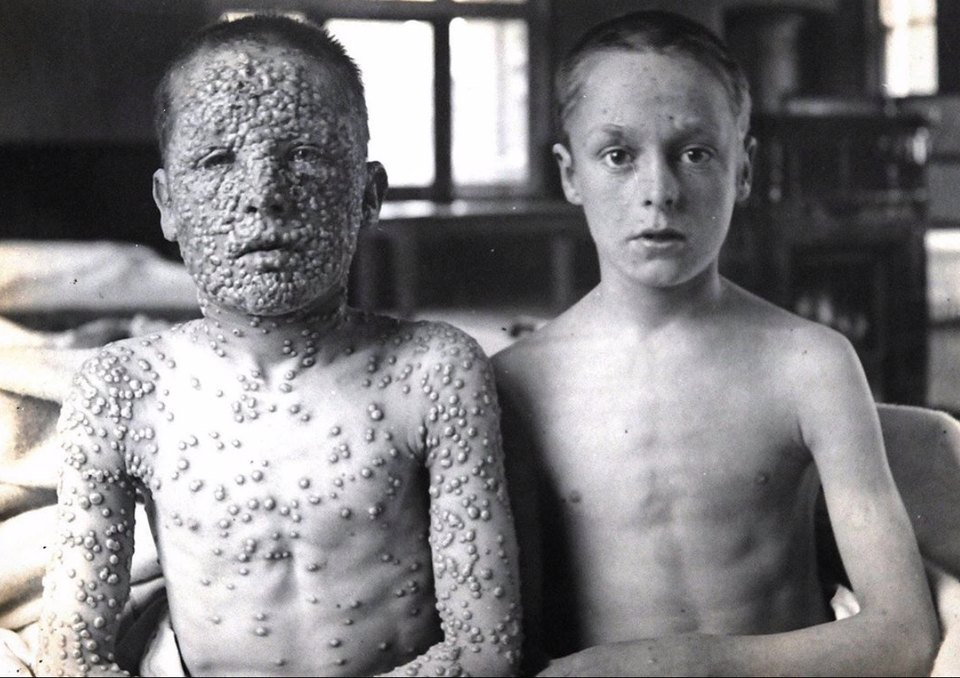
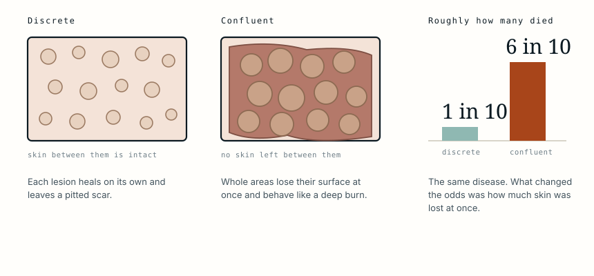

Both boys were infected
It is probably the most reproduced photograph in the history of vaccination, and the caption it usually carries is wrong in one specific way. The boy on the right did not escape smallpox. He caught it from the same person on the same day, and it stopped after two spots.
- Field
- Infectious disease, public health
- Photographer
- Dr Allan Warner, Leicester Isolation Hospital
- Published
- 1901, in the New Sydenham Society atlas
- Patients
- Two boys, both aged 13
- Exposure
- The same source, on the same day
- Left
- Not vaccinated; fully pustular stage
- Right
- Vaccinated in infancy; one or two spots, already scabbed
- Disease
- Variola major
- Status today
- Eradicated; last natural case 1977
- same dayboth are infected
- days 1-3fever, no rash yet
- day 4the paths separate
- week 2discrete or confluent
- 1901why Leicester
- 1980eradicated
What the original caption actually says
The photograph was taken by Dr Allan Warner at the Leicester smallpox isolation hospital and published in 1901. Its caption, in the atlas where it first appeared, is more precise than almost every version that has circulated since.
It records two boys, both aged 13, infected from the same source on the same day. The one on the right had been vaccinated in infancy and the one on the left had not. And then the line that matters: the boy on the right had one or two spots, which have aborted and have already scabbed.
He was not spared infection. He caught smallpox. A handful of lesions appeared, failed to develop, and dried up.
He is in the photograph because he was a patient in the same isolation hospital, admitted for the same disease.

What vaccination was actually doing
This is the part the popular captions lose, and it is the more useful lesson.
Vaccination against smallpox did not reliably build a wall that the virus could not cross. What it built was a response already primed to recognise it. The virus still entered, still replicated, and still produced lesions. It simply met a defence that was waiting rather than one that had to be assembled from scratch over a fortnight, and it lost before the disease could establish itself.
Physicians of the period had a name for what the boy on the right had. They called it modified smallpox, or varioloid: the infection present, the illness truncated.
His vaccination was also thirteen years old. Protection after smallpox vaccination was known to fade over years, which is why revaccination was recommended and why a childhood dose did not guarantee an adult would escape entirely. He got the fading version of the protection. It was still enough.
Why the two bodies look so different
The boy on the left went through the disease as it runs in someone meeting it for the first time.
Smallpox begins with several days of fever and prostration before anything appears on the skin. The rash then comes in a single crop, all the lesions at the same stage, starting on the face and forearms and spreading inward. Over about two weeks they go from flat, to raised, to filled with fluid, to filled with pus, and finally to scabs.
The classification that mattered was not where the rash was but how closely packed it became.

In discrete smallpox the pustules stay separate, with normal skin between them, and each heals on its own leaving the pitted scar the disease is remembered for. Roughly one patient in ten died.
In confluent smallpox the lesions merge. The skin between them is destroyed along with them, and the surface comes away in sheets rather than in spots. At that point the problem is no longer a rash: it is a burn covering a large part of the body, with the same consequences of fluid loss, temperature failure and bacterial invasion through an open surface. Around six in ten of those patients died.
The difference between the two boys was not simply severity along one scale. It was the difference between a disease that scars and a disease that kills.
What it cost the ones who lived
Survival was not the end of it. Smallpox lesions destroy the sebaceous glands in the skin, and the scars that follow are permanent pits rather than flat marks, concentrated on the face.
The virus also attacked the eye. Corneal ulceration and scarring after smallpox was one of the leading causes of blindness in the era, which is why the disease appears so often in accounts of blind populations in the nineteenth century.
Overall, variola major killed roughly three in ten of the people it infected, and left a large share of the rest marked for life.
Why the photograph was taken in Leicester
The location is not incidental. Leicester was one of the strongest centres of anti-vaccination feeling in Britain.
Compulsory vaccination had provoked genuine and organised resistance, and Leicester had adopted an alternative approach of its own: isolate cases quickly, trace and quarantine contacts, and rely on that rather than on mass vaccination. It became known as the Leicester method, and it was not simply obstinacy. Isolation and contact tracing do work, and the early smallpox vaccine carried real risks that modern vaccines do not.
What the town also had, as a result, was a large unvaccinated population and a hospital receiving both kinds of patient during the same outbreak.
Warner photographed his patients systematically, across the stages of the disease and both the discrete and confluent forms. This particular plate exists because both boys happened to be in the same building with the same infection at the same time, which is a comparison no one could ethically arrange and which the epidemic arranged on its own.
According to the Jenner Trust, the parents of the unvaccinated boy had been persuaded by the anti-vaccination campaigning of the period. That detail is worth stating without contempt. They were acting on what they had been told, in a town where a great many people believed the same thing.
What happened to the disease
Smallpox is the only human disease ever eradicated. The last naturally acquired case was in Somalia in 1977, and the World Health Organization declared eradication in 1980.
The campaign that achieved it did not rely on vaccinating everyone. It used surveillance and containment: find a case, vaccinate the ring of people around it, and let the chain of transmission die out. In other words, the Leicester method and vaccination used together rather than as alternatives.
Because the disease no longer exists, routine vaccination stopped. Most people alive today have no protection against it at all, which is the reason the remaining laboratory stocks are still argued about.
What this case teaches
The photograph is usually presented as one boy who caught smallpox and one who did not, and the original caption says something more exact and more useful. Both were infected from the same source on the same day. The vaccinated boy developed one or two spots that aborted before they could progress, which is why he is standing in an isolation hospital rather than at home. Vaccination had not kept the virus out. It had met it with a defence already built, thirteen years after the dose, and that was the whole difference between a fortnight of feeling unwell and a disease that at its confluent worst killed more than half the people who reached that stage.
The photograph described here was taken by Dr Allan Warner at the Leicester smallpox isolation hospital and first published in 1901 in the New Sydenham Society’s An Atlas of Illustrations of Clinical Medicine, Surgery and Pathology. Its authenticity and its original caption have been verified independently by Snopes and by Africa Check. Warner died in 1952 and the plate is long out of copyright. The account of Leicester’s anti-vaccination movement and of the unvaccinated boy’s family follows the Jenner Trust. Figures for the course and mortality of variola major, and for the eradication campaign, are drawn from standard references and from the World Health Organization. The diagram is original to MedicaseHub and may be reused freely. This article is not medical advice. Read the full disclaimer.
Related cases
- The wound was cleaned. She still got tetanus.The one injection that would have prevented it was never given.
- Bladder stone surgery in 1824Forty minutes, fully conscious, and still the better option.
- It looked like a virus. It was the medication.He was taking lamotrigine. Much of the risk with that drug is in how fast the dose goes up.